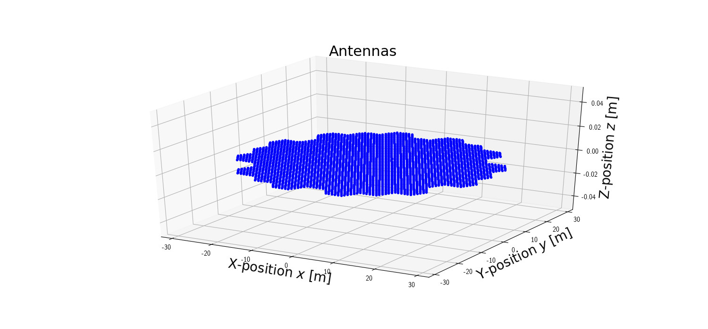
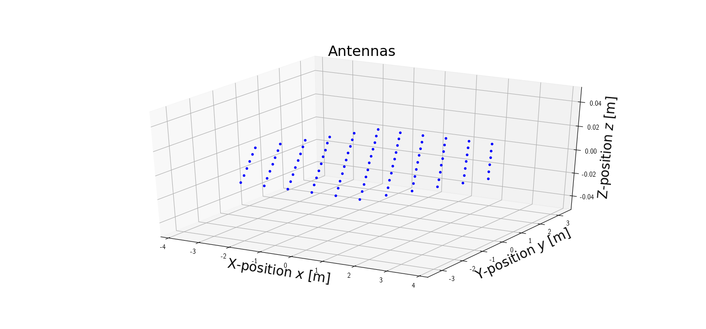
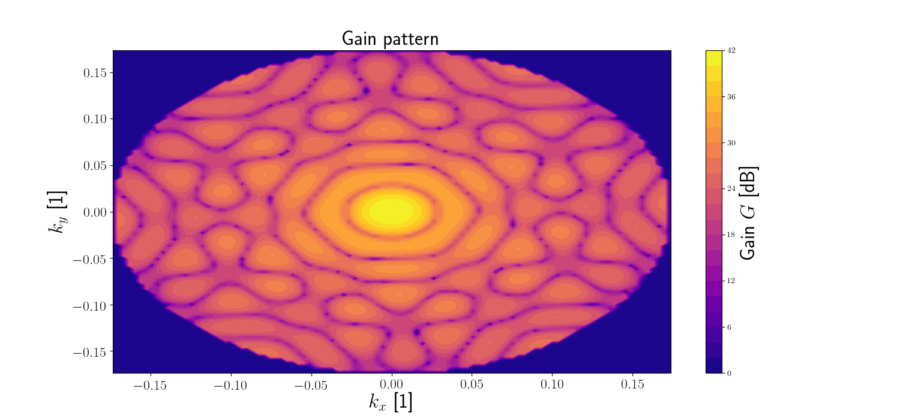

Note
Click here to download the full example code
Predefined instances¶
- 
- 
- 
Out:
['e3d_array_module', 'e3d_array_stage1', 'e3d_array_stage2']
EISCAT 3D Module peak gain: 24.590413923210935
EISCAT 3D Stage 1 peak gain: 41.99404081815337
EISCAT 3D Stage 2 peak gain: 44.96467890261718
import numpy as np
import pyant
import pyant.instances as lib
print(lib.__all__)
e3d_m = lib.e3d_array_module
e3d_m_I0 = e3d_m.sph_gain(
azimuth=e3d_m.azimuth,
elevation=e3d_m.elevation,
)
print(f'EISCAT 3D Module peak gain: {10*np.log10(e3d_m_I0)}')
e3d = lib.e3d_array_stage1
e3d_I0 = e3d.sph_gain(
azimuth=e3d.azimuth,
elevation=e3d.elevation,
)
print(f'EISCAT 3D Stage 1 peak gain: {10*np.log10(e3d_I0)}')
e3d_s2 = lib.e3d_array_stage2
e3d_s2_I0 = e3d_s2.sph_gain(
azimuth = e3d_s2.azimuth,
elevation = e3d_s2.elevation,
)
print(f'EISCAT 3D Stage 2 peak gain: {10*np.log10(e3d_s2_I0)}')
pyant.plotting.antenna_configuration(e3d.antennas)
pyant.plotting.antenna_configuration(lib.e3d_array_module.antennas)
pyant.plotting.gain_heatmap(e3d, resolution=100, min_elevation=80.0)
pyant.plotting.show()
Total running time of the script: ( 0 minutes 8.040 seconds)